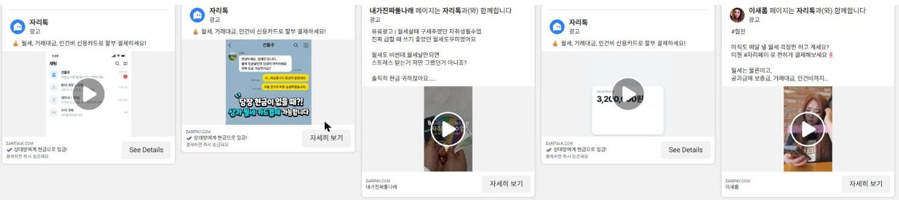
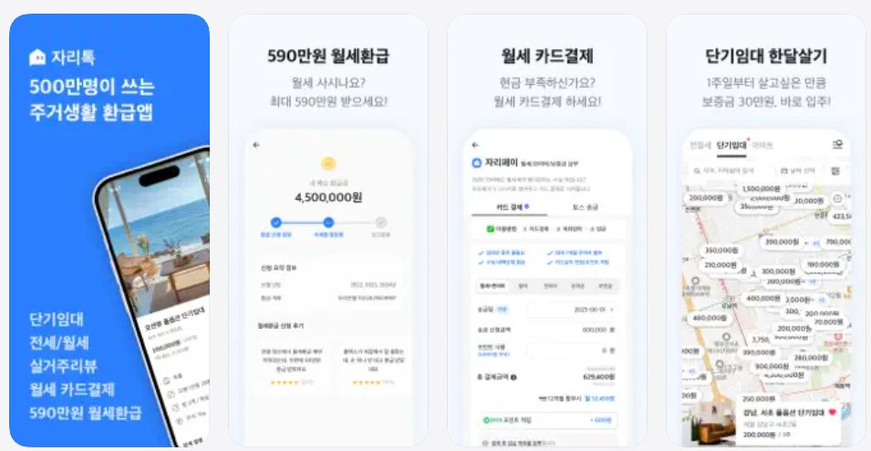
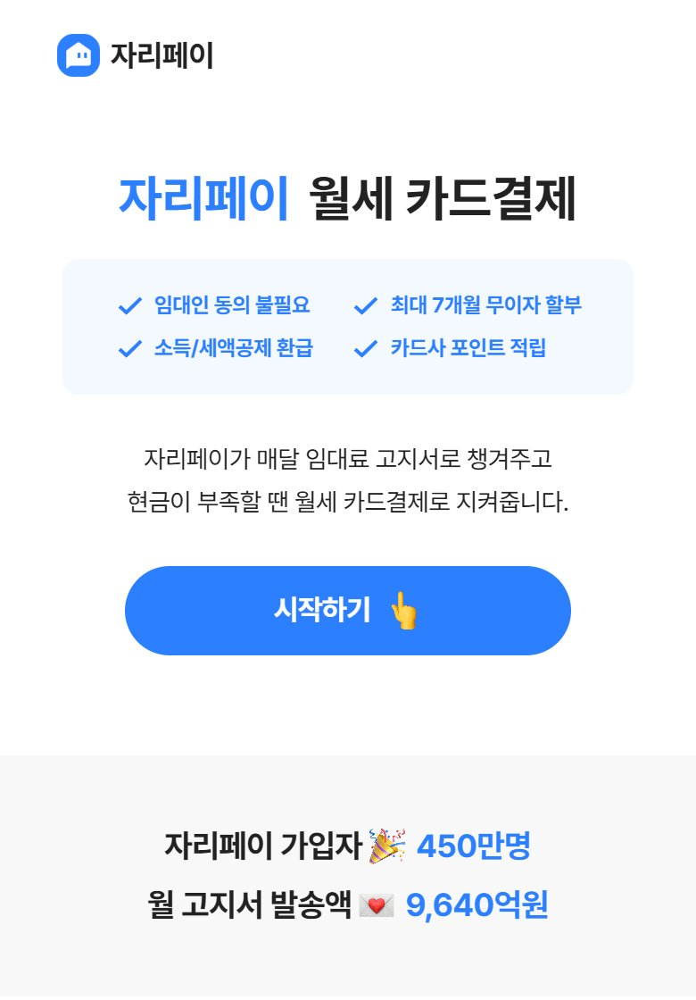
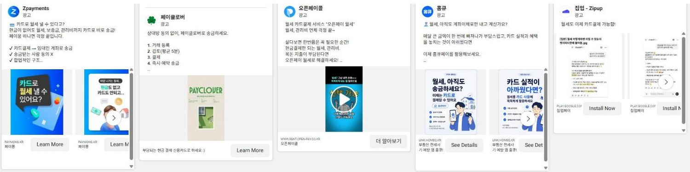

카드로 월세 내기는 이제 16곳이 똑같이 말합니다. 자리톡만 가진 것은 집주인 70만 명과 세입자 600만 명이 함께 쓰는 월세 기록입니다. 이 기록으로
"월세 세액공제"(낸 세금 일부 돌려받기) 월 1.1만 회 검색
"월세 밀림" 월 50회 검색
급할 때 1번 쓰는 앱 → 매달 자동으로 쓰는 앱
집주인과 세입자가 같이 확인한 "월세 기록"
매달 자리톡으로 월세를 내는 세입자 수
먼저 볼 숫자: 기록을 켠 세입자 수
이도형 · 그로스 마케터 | ← → 키로 넘기기 · F 전체 화면
읽는 법 · 모든 숫자 옆에 출처를 적었습니다. [자사발표] 회사가 직접 낸 숫자 · [제3자] 기사·통계 · [직접 확인] 제가 2026-10-28에 직접 조회 · [가정] 제가 세운 예상치
처음 온 사람이 핵심 가치를 빨리 느끼도록 첫 화면(온보딩)을 다듬기
다시 쓰는 습관과 스스로 소개하는 흐름을 설계하기
A/B 테스트(두 안을 나눠 비교)로 결제 전환을 올리고 숫자로 증명하기
우대(리멤버 공고): MAU(한 달 이용자) 100만 이상 서비스, 0→1(처음부터 키운) 성장 경험
그래서 이 발표는
AARRR 5단계마다 병목 1개를 찾고,
AS-IS → TO-BE로 바꾼 뒤,
LTV가 왜 오르는지 숫자로 연결합니다.
| 서비스 | 누구 | 무엇 | 돈 |
|---|---|---|---|
| 임대장부 · 카톡 고지서 | 집주인 | 월세 입금 확인, 미납 알림, 세입자에게 고지서 자동 발송 | 무료 |
| 자리페이 (월세 카드결제) | 세입자 | 카드로 결제하면 집주인 계좌에 현금 입금. 집주인 동의 불필요, 최대 7개월 무이자 | 이용료 4.9% |
| 월세 환급 | 세입자 | 놓친 월세 세액공제를 5년 전까지 돌려받게 도움 | 확인 불가 |
| 자리스테이 (단기임대) | 집주인·세입자 | 1주~몇 달 짧게 사는 집 예약 | 집주인(호스트) 무료 |
| 매물 · 실거주 리뷰 | 세입자 | 집주인 직접 매물, 층간소음 같은 실제 후기 | 무료 |

구글은 영상 약 200개 · 인플루언서 "솔직히 현금 귀하잖아요"

말이 서로 다름 · 앱스토어는 "환급앱", 결제 화면은 "현금 부족하신가요?"

"현금이 부족할 때 카드로 월세"는 지금 쓰는 사람에게는 맞는 말입니다 (5점 리뷰 약 200건). 하지만 대부분의 세입자에게 매달 일어나는 일은 아니어서, 새 사람을 데려오기엔 좁고 급할 때 한 번만 쓰게 됩니다.
근거: 네이버 검색광고 키워드 도구 월간 검색 수 (PC+모바일)
"당장 현금이 없을 때"
나와 상관없는 이야기 → 급할 때만 기억남
"올해 낸 월세, 얼마 돌려받을 수 있을까?"
월세 내는 모든 사람의 이야기 → 매년, 매달 다시 옴
"카드결제" 검색 9,100은 16곳이 나눠 갖습니다.
"돌려받기" 검색 1.4만은 결제 회사 중 노리는 곳이 없습니다.

같은 날 광고 중인 곳
집업 · 렌탈페이 · 페이클로버 · 오픈페이 · 홈큐 · 사장님페이 · 3분페이 · 봄날페이 · 페이원 · 네잎페이 · Zpayments · 페이빈 · 한달페이 · joypay · 아파트아이 · 자리톡
"집주인 동의 없이 · 할부 · 카드 실적"은 이제 모두의 문구입니다. 자리톡이 남이 못 따라 하는 말을 해야 합니다.
"고지서, 카드결제, 혜택, 자리페이… 끝도 없이 옵니다"
차단하면 다른 채널 이름으로 다시 옴 → "스토킹·피싱 같다"
"수수료 먼저 가져가고… 결제 취소를 안 해 주네요"
좋은 리뷰도 수수료를 언급 (약 56건) → "혜택으로 상쇄" 논리로 받아들임
"확인해 보면 0원" · "환급 24만 원에 수수료 8만 원"
→ "최대 ○○원" 광고와 실제 금액 차이
납부 여부를 입력하지 않으면 집주인에게 확인 문자를 보낸다고 안내 → "협박하는 앱"
"연락 안 간다더니 바로 연락"
5점 중 일부는 "이벤트 때문에 쓰는 리뷰" → 평점 4.6은 할인해서 봐야 함
핵심
세입자가 자리톡을 좋아하는 이유는 "집주인 모르게 카드로"입니다.
그런데 운영이 그 약속을 깨고 있습니다.
→ 모든 해결책의 원칙: 집주인 연락은 세입자가 누를 때만
| 서비스 | 지금 하는 방식 | 문제 | 이렇게 고치면 |
|---|---|---|---|
| 🧾 월세 환급 "세액공제" 월 1.1만 검색 | 광고로 데려와 한 번 환급해 줌 | 한 번 받고 떠남. 계약서·납부 내역을 받아 놓고 다음 단계로 안 이어짐 | 환급 = 첫 관문. 받은 서류로 "매달 기록"을 켜고 첫 결제까지 연결 |
| 📨 카톡 고지서 한 달 9,640억 원 발송 | 집주인이 세입자에게 무료로 보냄 | 세입자에게 누가 보냈는지 안 보여 피싱 오해 · 차단 | "집주인 ○○○님이 보낸 고지서" + 납부 확인 버튼 → 돈 안 드는 세입자 유입 통로 |
| 🏠 단기임대 "단기임대" 월 2.4만 검색 | 광고로 세입자를 모음 | 검색 경쟁이 높고(광고 10개) 비쌈. 공급(집) 쪽 강점이 안 쓰임 | 집주인 장부의 빈 방(공실)을 단기임대로 바로 올리게 → 공급은 자리톡만 빠름 |
| 💬 실거주 리뷰 · 매물 | 따로 있는 탭 | 이사할 때만 열림 | 계약 끝나기 2달 전 "다음 집" 알림 → 이사해도 자리톡에 남게 |
모든 서비스의 공통 재료는 "이 사람이 어디서, 얼마를, 언제 냈는가" = 월세 기록입니다. 기록을 중심에 두면 서비스끼리 이어집니다.
| 카드사 직접 | 집업 · 렌탈페이 등 | 삼쩜삼 · 홈택스 | 직방 · 다방 | 자리톡 | |
|---|---|---|---|---|---|
| 월세 카드결제 | 🟡 | 🟢 | ⚪ | ⚪ | 🟢 |
| 집주인이 쓰는 장부 | ⚪ | ⚪ | ⚪ | ⚪ | 🟢 70만 명 |
| 월세 환급(세액공제) | ⚪ | ⚪ | 🟢 | ⚪ | 🟢 |
| 빈 방 → 단기임대·매물 | ⚪ | ⚪ | ⚪ | 🟢 | 🟢 |
| 양쪽이 확인한 월세 기록 | ⚪ | ⚪ | ⚪ | ⚪ | 🟢 유일 |
왜 못 따라 하나 · 결제 앱은 세입자 한쪽만 봅니다. 집주인 70만 명이 매달 쓰는 장부가 있어야 "그 돈이 정말 월세로 들어왔다"를 확인할 수 있습니다. 단, 양쪽 이익이 맞는 범위에서 — 집주인에게는 미납 감소·입금 자동 확인, 세입자에게는 기록.
해외 사례 · Bilt · 월세 결제에 포인트를 주고 신용평가사(신용점수 매기는 회사)에 납부 기록을 보냄 → 기업가치 107.5억 달러(2025). 회원 중 카드 보유는 약 15% → 결제 기록이 먼저, 카드는 나중.
한 줄 약속
"월세, 내면 남게. 자리톡"
돌려받기 · 올해 낸 월세로 받을 환급을 미리 계산
쌓이기 · 매달 낸 기록이 자동 저장, 내년 서류 준비 끝
인정받기 · 집주인이 확인한 "성실 납부 기록"을 다음 집에서 사용
| AARRR | 지금 병목 (AS-IS) | 바꿀 것 (TO-BE) | 키우는 칸 |
|---|---|---|---|
| A 획득 | "현금 없을 때" 메시지 · 16곳과 같은 말 | "돌려받기"로 데려오기 + 고지서를 공짜 통로로 | 들어오는 사람 수 |
| A 활성화 | 환급 받고 끝 · 첫 결제로 안 이어짐 | 환급 서류 → 기록 켜기 → 첫 결제 | 첫 결제율 |
| R 유지 | 급할 때 한 번 쓰는 구조 | 매달 자동 예약 + 쌓이는 기록 리포트 | 1년에 내는 횟수 |
| R 추천 | 카톡 폭탄 · 피싱 오해로 차단 | 알림은 줄이고, 집주인-세입자 서로 초대 | 머무는 기간 · 공짜 유입 |
| R 수익 | 4.9% 불만, 가격 비교에 짐 | 매달 쓰면 덜 내는 구조 + 이사·단기임대 연결 | 함께 쓰는 서비스 |
수익은 "이익" 기준으로 · 1건 공헌이익(비용 빼고 실제 남는 돈) = 4.9% − 카드 결제망 비용 − 무이자 할부 비용. 비용 비율은 회사 내부 숫자라 입사 후 확인합니다.
회수 기간 = 1명 데려오는 비용(CAC) ÷ 1명 한 달 공헌이익 → 몇 달 만에 광고비를 되찾는지
모든 세입자가 관심 있는 "환급"으로 시작하면 클릭이 늘고, 들어온 사람도 계약서를 가진 "진짜 세입자"라 다음 단계로 잘 넘어간다.
검증: 같은 예산으로 "현금 부족" 광고 vs "환급 계산" 광고 A/B 비교 → 첫 결제까지 비용 비교
환급을 신청한 사람은 이미 계약서와 집주인 계좌를 입력했다. "다음 달부터 이 기록 자동으로 쌓기"만 누르면 첫 결제의 귀찮음이 거의 없다.
검증: 환급 완료 화면에 "기록 켜기" 버튼 있음 vs 없음 → 30일 안 첫 결제율 비교
환급 탭과 결제 탭이 따로 있음 · 환급이 끝나면 다음 할 일이 없음 · 납부 여부를 안 넣으면 집주인 문자 안내 → "협박" 리뷰
지표 · 환급 신청자 중 기록 켠 비율(무료) → 그중 카드가 필요한 사람의 첫 결제율. 결제를 모두에게 밀지 않습니다
"급할 때" 메시지로 온 사람은 급한 일이 끝나면 떠난다. 매달 쌓이는 게 보이면 계좌이체로 돌아가지 않는다.
검증: 첫 결제자를 두 그룹으로 → "월세 기록 리포트" 받음 vs 안 받음 → 3개월 연속 결제율 비교 (안 받은 그룹이 비교 기준)
지킬 선 · 정보성 알림톡과 광고성 메시지의 수신 동의를 나눔 · 카드깡(카드로 현금 빼기, 불법)으로 보일 수 있는 결제는 막는 규정 유지 · 집주인 이름 표시는 집주인 동의 후
4.9%를 1.8%로 내리면 매출이 바로 63% 줄어든다. 대신 새로 매달 쓰게 된 사람에게만 혜택을 주면 1건 수익은 조금 줄어도 1년 수익은 커진다.
검증: 정기 예약 혜택(예: 3개월 연속 후 이용료 20% 포인트) 그룹 vs 없음 → 늘어난 공헌이익 − 이미 매달 내던 사람에게 준 할인이 0보다 큰지
20%를 돌려줘도 매출은 약 3.2배. 할인보다 "횟수"가 큰 칸입니다.
⚠ 이익은 결제망·할부 비용을 빼고, 이미 매달 내던 사람에게 준 할인도 빼서 판단합니다.
하지 않을 것 · 수수료 가격 싸움 · 모든 사람에게 같은 쿠폰
⭐ 목표 지표 (North Star · 팀 전체가 보는 숫자 1개)
매달 자리톡으로 월세를 내는 세입자 수
= 새로 온 사람 × 첫 결제율 × 매달 남는 비율 · 먼저 볼 숫자: 기록 켠 세입자 수
| 액션 | 먼저 움직일 숫자 | LTV 칸 |
|---|---|---|
| ① 환급 메시지 · 고지서 통로 | 첫 결제까지 비용 ↓ | 들어오는 사람 |
| ② 환급 → 기록 켜기 | 30일 첫 결제율 ↑ | 들어오는 사람 |
| ③ 매달 자동 + 리포트 | 3개월 연속 결제율 ↑ | 1년 횟수 |
| ④ 알림 정리 · 서로 초대 | 차단율 ↓ · 집주인 연결률 ↑ | 머무는 기간 |
| ⑤ 매달 혜택 · 이사 연결 | 1인 연 이용료 ↑ | 함께 쓰는 서비스 |
지킬 숫자 (가드레일 · 나빠지면 멈추는 선) · 카톡 차단율 · 집주인 장부 이탈률 · 결제 분쟁·환불 · 고객 문의 수 — 하나라도 기준을 넘으면 실험 중단
모든 효과는 "안 했을 때(비교 그룹)"와 비교해 더 생긴 만큼만 성과로 보고합니다.
퍼널(가입→결제 단계별) 숫자 기준값 확인 · 알림 정리처럼 위험이 큰 것부터 고침
획득·활성화 A/B 결과 · 이긴 쪽에 예산 이동
3개월 연속 결제율 첫 측정 · 다음 분기 우선순위 제안
🔬 실험 규칙
커버링에서 1인 마케터로 시작해 5인 팀까지, 월 매출 약 40배
→ 우대: 0→1 급성장(J커브)광고가 찾을 목표를 설치 → 구매로 바꾸고 중간 페이지를 만들어 구매 1건 비용 절반
→ ① 획득 · 첫 결제까지 비용작은 인플루언서 콘텐츠를 광고로 확장, 소재 직접 기획·제작
→ ① "돌려받기" 소재회원 등급 · 떠나기 직전 알림톡 자동화로 첫 달 재구매 +41%p, 안 쓰던 7,997명이 다시 사용
→ ③ 유지 · 매달 자동통신 플랫폼에서 알림톡 · 브랜드메시지 운영, 발송 캘린더로 겹침 정리, 단발 캠페인 신청 1건당 비용 9천원대
→ ④ 알림 규칙 정리메타 광고 57개 · 경쟁 광고 54개 · 구글 약 200개 · 네이버 키워드 30여 개 · 앱 리뷰
→ 입사 첫 주에도 같은 방식공고: AARRR 병목 찾기 → 단계마다 문제 1개 · 액션 1개로 이 발표를 구성
공고: 쉬운 카피 → "월세, 내면 남게" · 어려운 세금을 "돌려받기"로
공고: MVP 실험 → 모든 액션에 가설 · 비교 그룹 · 판정 기준
배운 것 · "쿠폰 쓴 사람이 더 산다"는 원래 살 사람이었을 수 있다
자리톡에서 · 알림·혜택마다 안 받는 비교 그룹을 두고, 늘어난 결제만 성과로 보고
배운 것 · 빨리 낸 초안은 동료의 수정 시간이 된다
자리톡에서 · 고객에게 나가는 메시지는 5가지 체크(사실·랜딩 일치·수신 동의·오탈자·모바일) 후 발송
배운 것 · 요청을 다 받는 것이 좋은 팀워크는 아니다
자리톡에서 · 첫 2주 안에 기대치 문서 · 새 요청엔 "무엇이 밀리는지" 먼저 · D+7에 결과 3줄 공유
포부
"월세 낼 때가 되면 계좌이체가 아니라 자리톡을 여는 것"을
600만 세입자의 습관으로 만들겠습니다.
알림은 줄이고, 돌려받는 돈과 쌓이는 기록은 늘려서 — 숫자로 증명하겠습니다.
리드와 기대치 문서 1장 · 퍼널 숫자 기준값 확인
카톡 채널·발송 빈도 전수 점검 · 부정 리뷰 1위부터
첫 A/B(환급 소재) 결과를 D+7 3줄로 공유
"급할 때 카드"는 공감이 약하고, 16곳이 똑같이 말하고, 한 번 쓰고 떠난다
집주인 70만 · 세입자 600만이 함께 쓰는 양쪽이 확인한 월세 기록
기록·환급은 무료로 데려오고 → 카드가 필요한 사람은 매달 자동으로 → 집주인과 묶어 1인 연 매출 약 3배 [가정]
이도형 · 그로스 마케터 · 감사합니다
| 질문 | 답의 방향 |
|---|---|
| 환급은 계좌이체로도 받는데, 왜 4.9%를 내나요? | 모두에게 결제를 팔지 않습니다. 기록·환급으로 데려오고, 카드 실적·할부가 필요한 사람만 매달 결제로 보냅니다. |
| 4.9%에서 비용을 빼면 남는 게 얼마인가요? | 지금은 모릅니다. 그래서 공헌이익(4.9% − 결제망 − 할부 비용)으로 다시 계산하고, 할인 실험은 늘어난 이익으로 판정합니다. |
| 집주인이 세입자 환급을 싫어하면요? | 고지서 안 환급 버튼은 1~5%만 시험하고, 집주인 장부 이탈률이 기준을 넘으면 멈춥니다. |
| 환급 검색은 1월·5월에 몰리는데 나머지 달은요? | 시즌에는 서류를 모아 기록을 켜고, 다른 달은 고지서 통로와 매달 리포트가 유입·유지를 맡습니다. |
| 지금 사용자는 "현금 부족"이 좋아서 쓰는데요? | 맞습니다(5점 리뷰 약 200건). 그 사람들은 지키고, 새로 데려올 사람에게는 더 넓은 "돌려받기"로 말하자는 것입니다. |
| 이미 "환급앱"이라고 하는데 뭐가 새롭나요? | 환급을 새로 하자는 게 아닙니다. 환급과 결제가 따로 노는 것을 하나의 흐름으로 잇자는 것이고, 그 연결 비율이 핵심 지표입니다. |
제가 여쭤보고 싶은 것 · ① 월세 환급의 이용료 구조 ② 자리페이 결제자 중 매달 쓰는 비율 ③ 이 포지션에 첫 90일 동안 기대하시는 결과